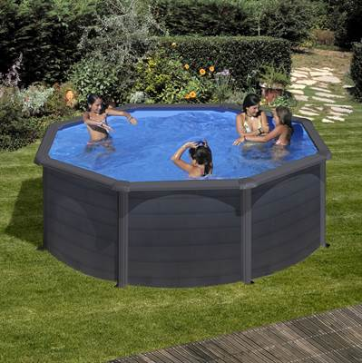

Riopooler
Snyggt & Enkelt
Riopools utomhuspooler för enkel självmontering däckas in snyggt, grävs ner eller står stiligt direkt på tomten med sin klassiskt tidlösa vackra design. Poolpaketen levereras kompletta och badklara med stålväggsstomme, liner, reningsverk, stege & bra lättlästa instruktioner. - snabbt klart för bad!
Kvalitet & Säkerhet
- Vi använder erkända ledande tillverkare som är specialiserade på våra poolprodukter. Vi väljer tillvekare som leder utvecklingen inom kvalitet och säkerhet. Poolerna är Europatillverkade och certifierade enligt de stränga Europaledande normerna NF P 90 för barnsäkerhet, rening & miljö. Poolväggen är tillverkad av högkvalitativ Magnelis® rostskyddsbehandlad stålplåt från Europas ledande tillverkare.
Vi räknar inte kvalitet i millimeter eller motorstyrka
En vanlig missuppfattning är att ju tjockare liner och mer watt i poolpumpen desto bättre. Det stämmer bara i de fall materialen är av dålig kvalitet så det behöver förstärkas i tjocklek, eller möjligtvis dålig rening så att pumpstyrkan behöver överdimensioneras. Våra pooler har testats över hela Europa och förfinats av poolproffs med förbättringar i kvalitet, säkerhet och miljö som gagnar både poolbyggare, poolbadare och en hållbar miljöhänsyn. Våra tillvekare utvecklar material och konstruktioner som överträffar äldre modeller i kvalitet och säkerhet genom att använda ledande Europeiska tillverkare av rostskyddad korrugerad poolplåt och UV-beständig och köldtålig poolliner. Överdimensionerad pumpstyrka kan förstöra sandfiltrets reningskapacitet genom ett för högt flöde. För effektiv rening krävs ett så lågt pumpflöde som möjligt genom ett så stort sandfilter som möjligt - precis som när källvatten renas när det sipprar ner igenom sandåsar. För certifiering krävs rätt pumpstyrka till rätt sandfilter. Dåligt optimerade höga kW siffror på pumpen innebär dålig reningseffektivitet och hög elräkning.


Exklusiv mörk vacker mahogny/teak träimmitation, 120 cm hög

Din egen hälsobrunn i vacker stenimmitation, 120 cm hög
- 
Gratis uppvärmning! - svart stilren designpool, 120 cm hög
-
Trädgårsbäcken för de minsta fiskarna, 90 cm hög
-
Hela familjens svalkande vik, 120 cm hög